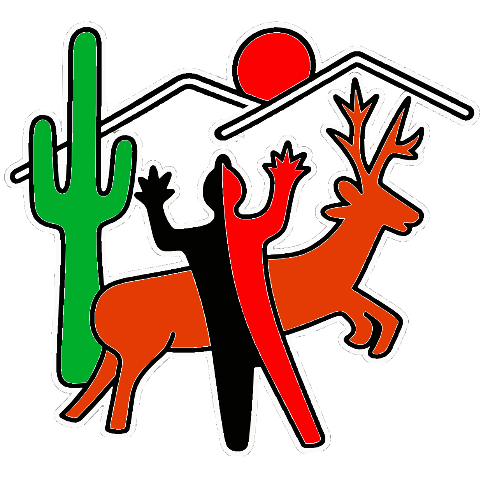

Generación de solicitudes de préstamos a corto y largo plazo con cálculo automático de quincenas y conversión de montos a letra.
Solicitud de ingreso y/o actualización para familiares recomendados de agremiados, con registro de niveles académicos y localidades.